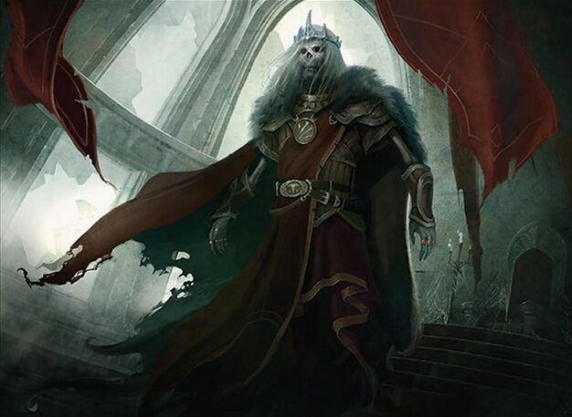

Edgar Markov
Stark
Das Deck gewinnt 34 % seiner Partien – der Schnitt am Vierertisch liegt bei 25 %.
- Stufe · Elo
- A 1604 Platz 16 von 64 in der Rangliste bis 100 €
- Siegquote
- 34 % 169,2 Siege in 498 Partien, mit 90 % Sicherheit zwischen 31 und 38 %
- Platzierungen
- 115 %6×
- 215 %6×
- 341 %16×
- 428 %11×
Dort ein neues Deck anlegen und die Liste beim Import einfügen.
- Preis
- 99,99 €von 100,00 €
- Partien
- 511in 51 Turnieren, 13 am Zeitlimit nicht gewertet
- Karten
- 10036 Länder, davon 14 Standard
- Game Changer
- 0höchstens 3 erlaubt
- Kombos
- 0komplett im Deck
- Regelcheck
- Bestanden100 Karten, Farben, Bannliste
Höchstens 100 € inklusive Commander. Steigen die Preise darüber, wird die Kaufliste automatisch neu gebaut.
Die Kaufliste wurde am 16.11.2026 mit aktuellen Preisen neu gebaut: Die getestete Fassung kostete inzwischen 100,68 € und lag damit über 100,00 €. Siegquote und Platzierung stammen von der getesteten Fassung.
Stärken und Schwächen
Aus 488 ausgewerteten Partien in 50 Turnieren (mit den Listen, die im Turnier gespielt wurden). Partien am Zeitlimit zählen wie in der Rangliste nicht. Werte in Klammern: Schnitt aller Decks derselben Preisklasse. Die genauen Zahlen siehst du, wenn du mit der Maus auf einen Punkt zeigst oder ihn antippst.
Spielweise: gewinnt über den Kampf – 99 % des Schadens an Gegnern ist Kampfschaden · So gewinnt es: 27 % der Siege durch Überleben – die Gegner schalteten sich gegenseitig aus (Schnitt aller Decks: 31 %)
Stärken
- Macht viel Druck sicherØ 41 Schaden an Gegnern je Partie (Schnitt aller Decks: 31) · 488 Partien
- Gewinnt schnell sicherSiege im Schnitt schon im 11. eigenen Zug (Schnitt aller Decks: 12.) · 165 Siege
- Nutzt sein Mana gut sicherNur 20 % der Länder blieben in einem Zug ungenutzt (Schnitt aller Decks: 26 %) – das Deck hat fast immer etwas zu spielen · gemessen in den eigenen Zügen 3–8, 181 Partien
- Räumt den Tisch ab sicherschaltet im Schnitt 0,80 Gegner je Partie aus (Schnitt aller Decks: 0,63) · 488 Partien
Schwächen
- Abhängig vom Commander Hinweisohne ihn nur 11 % Siege, mit ihm 38 % · 74 Partien ohne, 414 mit Commander
- Scheidet früh aus sicherin Niederlagen im Schnitt schon im 9. eigenen Zug (Schnitt aller Decks: 10.) · 323 Niederlagen
- Tut sich schwer gegen Flieger Hinweis22 % Siege wenn mindestens 40 % der gegnerischen Kreaturen fliegen oder Reichweite haben, 47 % bei höchstens 15 % (Schnitt aller Decks: 19 % zu 27 %) · 90 / 197 Partien
- Wird oft als Erstes ausgeschaltet sicherin 34 % der Partien (Schnitt aller Decks: 25 %) · 167 von 488 Partien
Gegen wen es gewinnt
Siegquote an Tischen, an denen dieser Commander mitspielte – nur Gegner aus der aktuellen Rangliste mit mindestens 20 gemeinsamen Partien. Am Vierertisch liegt der Schnitt bei 25 %.
Gewinnt oft gegen
 50 %von 32
50 %von 32 48 %von 33
48 %von 33 48 %von 25
48 %von 25
Tut sich schwer gegen
 12 %von 40
12 %von 40
14 %von 35 18 %von 49
18 %von 49
Spielstil
Kreaturen-DruckKartenvorteil
Anzahl Karten je Aufgabe – Ø ist der Durchschnitt aller getesteten Decks (Strich im Balken).
Mit einem anderen Commander vergleichen
Commander (1)
- Edgar Markov27,09 €
Kreaturen (46)
- Bloodline Keeper // Lord of Lineage5,35 €
- Master of Dark Rites Ramp4,59 €
- Edgar, Charmed Groom // Edgar Markov's Coffin4,29 €
- Welcoming Vampire Kartenziehen3,41 €
- Malakir BloodwitchKI schwach3,02 €
- Blood Artist S2,14 €
- Cordial Vampire2,05 €
- Captivating VampireKI schwach1,97 €
- Knight of the Ebon Legion1,91 €
- Clavileño, First of the Blessed Kartenziehen1,89 €
- Twilight Prophet1,85 €
- Forerunner of the Legion1,43 €
- Drana, Liberator of Malakir1,20 €
- Cruel Celebrant0,86 €
- Stromkirk Captain0,82 €
- Legion Lieutenant0,61 €
- Mavren Fein, Dusk Apostle0,55 €
- Falkenrath Pit Fighter Kartenziehen0,53 €
- Viscera SeerKI kann nicht0,52 €
- Patron of the Vein Removal0,51 €
- Sanctum Seeker0,51 €
- Vampire of the Dire Moon0,46 €
- Butcher of Malakir Removal0,37 €
- Florian, Voldaren Scion0,35 €
- Vampire Socialite0,35 €
- Champion of Dusk Kartenziehen0,34 €
- Crossway Troublemakers Kartenziehen0,29 €
- Rakish Heir0,27 €
- Markov Baron0,23 €
- Ruthless Lawbringer Removal0,21 €
- Vengeful Bloodwitch0,20 €
- Voldaren Epicure Kartenziehen0,20 €
- Yahenni, Undying Partisan0,20 €
- Baron Bertram Graywater Kartenziehen0,19 €
- Indulgent AristocratKI schwach0,19 €
- Dusk Legion Zealot Kartenziehen0,18 €
- Oathsworn Vampire0,18 €
- Shadow Alley Denizen0,17 €
- Vampire Gourmand Kartenziehen0,17 €
- Voldaren Bloodcaster // Bloodbat Summoner Kartenziehen0,17 €
- Vampire Nighthawk0,14 €
- Bartolomé del Presidio0,12 €
- Bloodtithe Harvester Removal0,12 €
- Restless Bloodseeker // Bloodsoaked Reveler Kartenziehen0,09 €
- Gluttonous Guest Kartenziehen0,04 €
- Blood Petal Celebrant Kartenziehen0,02 €
Spontanzauber (7)
- Anguished Unmaking S Removal1,69 €
- Dark Ritual A1,66 €
- Path to Exile B Removal1,00 €
- Swords to Plowshares B Removal0,97 €
- Village Rites A Kartenziehen0,21 €
- Urge to Feed Removal0,12 €
- Mortify Removal0,11 €
Hexereien (2)
- Olivia's Wrath Board Wipe1,24 €
- New Blood1,01 €
Artefakte (6)
- Skullclamp B Kartenziehen4,19 €
- Sol Ring B Ramp0,78 €
- Talisman of Indulgence A Ramp0,66 €
- Talisman of Hierarchy S Ramp0,54 €
- Arcane Signet B Ramp0,37 €
- Orzhov Signet Ramp0,32 €
Verzauberungen (2)
- Sanguine BondKI schwach3,67 €
- Stensia Masquerade0,14 €
Länder (36)
- Haunted Ridge1,52 €
- Vault of the Archangel1,48 €
- Bojuka Bog1,32 €
- Dragonskull Summit0,76 €
- Sulfurous Springs0,76 €
- Tainted Field0,43 €
- Caves of Koilos0,38 €
- Isolated Chapel0,30 €
- Unclaimed Territory0,25 €
- Secluded Courtyard0,24 €
- Voldaren Estate0,24 €
- Clifftop Retreat0,21 €
- Smoldering Marsh0,21 €
- Exotic Orchard0,19 €
- Command Tower0,16 €
- Nomad Outpost0,15 €
- Path of Ancestry0,12 €
- Orzhov Basilica0,07 €
- Terramorphic Expanse0,06 €
- Bloodfell Caves0,04 €
- Scoured Barrens0,04 €
- Evolving Wilds0,03 €
- 10× Swamp
- 2× Mountain
- 2× Plains
Upgrade auf bis 200 €
Du hast dieses Deck bis 100 €? Das getestete Deck bis 200 € spielt diese Karten anders – oben die, mit denen es am häufigsten gewinnt.
17 Karten anders · +95,68 € · Platz 16 → Platz 10
- Sorin, Imperious Bloodlord +13 % Siege, wenn gespielt5,43 €
- Elenda, the Dusk Rose +12 % Siege, wenn gespielt6,41 €
- Scheming Silvertongue // Sign in Blood +8 % Siege, wenn gespielt1,20 €
- Akroma's Will +7 % Siege, wenn gespielt15,28 €
- Damn +7 % Siege, wenn gespielt1,86 €
- Charismatic Conqueror +7 % Siege, wenn gespielt23,84 €
- Blood Tribute +4 % Siege, wenn gespielt1,93 €
- Vito, Thorn of the Dusk Rose8,95 €
- Boros Charm4,43 €
- Blood Crypt7,34 €
- Godless Shrine7,25 €
- Cathars' Crusade4,95 €
… und 5 weitere – alle stehen in der Liste zum Kopieren.
Dafür raus (17)
Blood Petal Celebrant, Bloodfell Caves, Butcher of Malakir, Dusk Legion Zealot, Florian, Voldaren Scion, Gluttonous Guest, Mortify, Oathsworn Vampire, Orzhov Basilica, Restless Bloodseeker // Bloodsoaked Reveler, Ruthless Lawbringer, Scoured Barrens, Shadow Alley Denizen, Terramorphic Expanse, Urge to Feed, Voldaren Bloodcaster // Bloodbat Summoner, Voldaren Epicure
Starthand ziehen
Sieben zufällige Karten aus diesem Deck – so siehst du, wie sich der Start anfühlt. Der Commander liegt wie im Spiel nicht im Stapel.
Die Partien in Zahlen
- Commander gewirkt
- 100 %der Partien, in 6 % bis zum 4. Zug
- Schaden je Partie
- 41Schnitt: 31
- Siege im Schnitt
- Zug 11,4eigener Zug, Schnitt: 12,2
- Als Erstes ausgeschieden
- 34 %167 von 488 Partien, Schnitt: 25 %
- Zu wenig Länder
- 10 %der Partien, davon 14 gewonnen, Schnitt: 9 %
- Mulligans
- 7 %34 in 488 Partien, Schnitt: 6 %
Karten mit messbarem Einfluss
Ein Zusammenhang, kein Beweis: Diese Karten kamen in Siegen deutlich öfter ins Spiel.
- Malakir Bloodwitch – gewonnen in 58 % der Partien, in denen sie gewirkt wurde (81), sonst 29 %
- Edgar Markov – gewonnen in 38 % der Partien, in denen sie gewirkt wurde (414), sonst 11 %
- Sanctum Seeker – gewonnen in 54 % der Partien, in denen sie gewirkt wurde (87), sonst 29 %
Was die Partien zeigen
Aus 488 ausgewerteten Partien in 50 Turnieren (mit den Listen, die im Turnier gespielt wurden). Partien am Zeitlimit zählen wie in der Rangliste nicht. Werte in Klammern: Schnitt aller Decks derselben Preisklasse. „sicher“: steht so im Spielprotokoll. „Hinweis“: kommt immer wieder vor, ist aber kein Beweis.
Schaden pro Partie alle Partien
Schaden an Gegnern pro Partie, gerechnet über alle 488 Partien – was die Karte insgesamt beiträgt
- Vampire Token Ø 10,7traf in 368 von 488 Partien
- Edgar Markov Ø 7,8traf in 303 von 488 Partien
- Patron of the Vein Ø 1,0traf in 33 von 488 Partien
Schaden bei Einsatz wenn sie trifft
Gesamtschaden ÷ Partien, in denen die Karte Schaden gemacht hat – ihre Stärke im Einsatz
- Patron of the Vein Ø 14,6traf in 33 von 488 Partien
- Vampire Demon Token Ø 14,4traf in 19 von 488 Partien
- Vampire Token Ø 14,1traf in 368 von 488 Partien
Top-Finisher schaltet Gegner aus
Karten, die am häufigsten einen gegnerischen Commander aus der Partie genommen haben
- Vampire Token 254×488 Partien im Deck
- Edgar Markov 44×488 Partien im Deck
- Drana, Liberator of Malakir 8×488 Partien im Deck
Beste Interaktion räumt auf
Gegnerkarten, die beim Auflösen dieser Karte zerstört, verbannt, zurückgeschickt oder neutralisiert wurden (ohne Spielsteine)
- Path to Exile 93×Ø 0,2 pro Partie · 488 Partien im Deck
- Mortify 77×Ø 0,2 pro Partie · 488 Partien im Deck
- Butcher of Malakir 74×Ø 0,2 pro Partie · 488 Partien im Deck
Größte Hindernisse blockt am meisten
Gegnerische Karten, die die Angreifer dieses Decks am häufigsten geblockt haben – insgesamt 16 % der 8300 Angreifer geblockt, davon 17 % durch Flieger oder Reichweite
- Goblin Token 25×blockte in 6 Partien
- Shapeshifter Token 19×blockte in 7 Partien
- Wizard Token 18×blockte in 14 Partien
Selten gewirkt Kandidaten zum Tauschen
Karten dieser Liste, die in ihren Partien am seltensten gewirkt wurden – oft zu teuer oder zu langsam (Länder ausgenommen)
- New Blood 0 %gewirkt in 0 von 488 Partien
- Dark Ritual 7 %gewirkt in 32 von 488 Partien
- Sanguine Bond 9 %gewirkt in 33 von 371 Partien
Siege nach Zug Tempo
In welchem eigenen Zug die 165 Siege kamen
- bis Zug 71 %
- Zug 8–921 %
- Zug 10–1136 %
- Zug 12–1323 %
- ab Zug 1419 %
Elo-Verlauf
Elo nach jedem Turnier, älteste links. Gestrichelt: Stufengrenzen S, A, B, C.
Jetzt 1604, am höchsten 1677 (22.10.), am niedrigsten 1579 – aus 51 Turnieren.
Letzte Partien
Platz in jeder Partie zu viert, älteste links: Gold = Sieg, Silber = 2, Bronze = 3, rot = 4, Ring = Remis.
32432324433131334233344213341343214443=1In den letzten 40 Partien 6× Sieg, 6× Platz 2, 16× Platz 3 und 11× Platz 4, dazu 1× Remis.
Manakurve ohne Länder
Durchschnitt 2,63
Aufgaben im Deck
Anzahl / Richtwert aus dem EDHREC-Durchschnittsdeck (der Strich), rot heißt deutlich darunter. Strategie: die übrigen Karten ohne eine dieser Aufgaben, etwa die Kreaturen und Effekte, um die sich das Deck dreht. Zusammen 63 Karten ohne Länder.
Kartentypen
- Kreaturen46 %46
- Spontanzauber7 %7
- Hexereien2 %2
- Artefakte6 %6
- Verzauberungen2 %2
- Länder36 %36
Teuerste Karten
Was das Programm gelernt hat
In jedem Turnier testet das Deck eine Karte. Ein Urteil gibt es erst ab 40 Partien mit und ohne die Karte. Weil das Deck jedes Turnier mit aktuellen Preisen und Daten neu gebaut wird, können getestete Karten später wieder herausfallen.
- kein klarer Unterschied Stromkirk Bloodthief statt Sanguine Syphoner · Siegquote 37 % mit, 31 % ohne (278 / 220 Partien) · aus einer früheren Fassung, heute nicht im Deck
- kein klarer Unterschied Anje, Maid of Dishonor statt Voldaren Bloodcaster // Bloodbat Summoner · Siegquote 30 % mit, 35 % ohne (77 / 421 Partien)
- kein klarer Unterschied Markov Waltzer statt Nighthawk Scavenger · Siegquote 36 % mit, 33 % ohne (96 / 402 Partien) · aus einer früheren Fassung, heute nicht im Deck
- kein klarer Unterschied Sanguine Syphoner statt Stromkirk Bloodthief · Siegquote 32 % mit, 35 % ohne (155 / 343 Partien) · aus einer früheren Fassung, heute nicht im Deck
- kein klarer Unterschied Nighthawk Scavenger statt Gifted Aetherborn · Siegquote 35 % mit, 33 % ohne (172 / 326 Partien) · aus einer früheren Fassung, heute nicht im Deck
- kein klarer Unterschied Nullpriest of Oblivion statt Gifted Aetherborn · Siegquote 32 % mit, 34 % ohne (40 / 458 Partien) · aus einer früheren Fassung, heute nicht im Deck
- kein klarer Unterschied Shadow Alley Denizen statt Nighthawk Scavenger · Siegquote 34 % mit, 34 % ohne (229 / 269 Partien)
3 weitere getestete Karten sammeln noch Partien.
Kaufliste für Cardmarket
Liste kopieren, auf Cardmarket unter „Wants“ eine neue Liste anlegen und einfügen.
Zusammen 99,99 € Cardmarket-Durchschnitt vom 25.11.2026
Cardmarket Wants öffnenPreise ohne Versand. Einzelne Karten können bei Cardmarket inzwischen teurer oder günstiger sein.
Gespielt von der Forge-KI, zu viert. Ein durchschnittliches Deck gewinnt 25 %. Wie wird getestet?